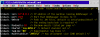
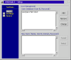
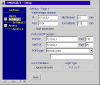
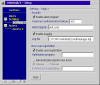
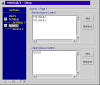
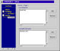

 WebMail2.cmd is the CGI script written in Classic Rexx. You can configure the script by either setting a few environment variables, or by editing the script itself.
Option 1:
Set the following environment variables:
| Variable | Parameter | Description |
|---|---|---|
WEBMAIL2_SERV |
127.0.0.1 |
IP address of the machine running the WebManager |
WEBMAIL2_PORT |
3511 |
Port that WebManager listens to |
WEBMAIL2_PATH |
(undefined) |
Path to .WM files. If undefined then default is %etc%\webmailhtml\ |
WEBMAIL2_PPATH |
(undefined) |
Optional variable used as a prefix for the image or CSS file path. |
WEBMAIL2_MAXE |
10 |
Maximum emails listed per page |
WEBMAIL2_CHARSET |
iso-8859-1 |
Default character set |
WEBMAIL2_MAXSIZE |
2097152 |
Maximum size of file attachements in bytes |
Option 2:
Edit the file with a text editor (e.exe,tedit etc). There are specific options
that you may change. You can also change other things in the script but you
should only do so if you are experienced with REXX structures.
| Variable | Parameter | Description |
|---|---|---|
Globals.!serv |
127.0.0.1 |
IP address of the machine running the WebManager |
Globals.!port |
3511 |
Port that WebManager listens to |
Globals.!WMPath |
"" |
Path to .WM files. If empty ("") then default is %etc%\webmailhtml |
Globals.!PrefixPath |
"" |
Optional variable used as a prefix for the image or CSS file path. |
Globals.!MaxEmails |
10 |
Maximum emails listed per page |
Globals.!CharSet |
iso-8859-1 |
Default character set |
Globals.!MaxAttachSize |
2097152 |
Maximum size of file attachements in bytes |
WebManager is the daemon which controls the user authentication and manages the online users. A single WebManager may control multiple webserver CGI's. Each webmail2.cmd CGI may connect to the same WebManager so that users will get access to the same email service from multiple web sites or web servers using distributed bandwidth software. Bellow is an explanation of each component window in the setup program.

Users Database
The users database allows you to add/remove/change users if you are using
the Internal Users Database. In all other cases this is disabled. You may
enter single usernames or usernames along with their domain name (user@domain)
if you want to limit domains, or you are using a POP3 server which supports
virtual domain names.
New Users
This is enabled only when the New User Registration feature is enabled, and
you have disabled automatic user registration. When a new user registers his
details will be shown here and you will be able to Accept the user or Reject
him. If you Accept the user then his details are passed to the email server,
else he is deleted. Deleted users may re-register unless their user ID is
listed in the BlackList.
 This page allows you to change important settings which control the way WebManager works in your system. The default settings can be used in almost all cases on single-server systems.
| Setting | Value |
|---|---|
IP |
127.0.0.1 |
Port |
3511 |
Idle timeout |
10 |
User refresh |
120 |
POP3 server |
127.0.0.1 |
POP3 port |
110 |
SMTP server |
127.0.0.1 |
SMTP port |
25 |
POP3 type |
Internal Users |
Your choice of POP3 type depends on the e-mail server you are using. There are two ways of adding users: manually or automatically. If your e-mail server is listed there, selecting it will allow WebMail/2 to automatically communicate with the mail server to get user information. You may also be required to enter the path of your email server installation. If you use Generic POP3 then you are not required to do anything else, WebMail/2 will communicate with the POP3 server for the authentication. For Internal Users, you will have to manually add user information later on.
The User Refresh timer is an important feature. When you add/remove users from your POP3 server, create a file named 'refresh' in the currect directory of WebManager. If this file exists WebManager will refresh the users data base in the next 120 minutes.
The 'Ignore domains' option is selected for specific email servers which don't support multiple domains, thus the users database doesn't record domains.
The 'Full email' option will force WebMail/2 to login to the POP3 server with the full (user@domain) email address of the user. This is useful on POP3 servers which support virtual domains.
When you have finished entering information on this page, click Save.

Security
If a specific number of authentication failures occurs then WebManager
will run the specified application.
You may also enable logging support, in which case you may choose the path and filename to write the log output.
New User Registration
This feature allows users to register email addresses with your POP3 server
over the web. This feature works only with the supported OS/2 email servers,
it does not work with Generic POP3 servers and InetMailPro.
New users may be logged and kept within WebManager for you to allow them access, their email will not be created within the POP3 server unless you authorise them. You may choose to enable 'Automatic register new users' which doesn't require the administrators intervention, new users will be automatically registered within the POP3 server and their email will be usable from then on.
If you enable the New User Registration, first you also need to rename userlogin2.wm to userlogin.wm. This will add the 'Register' button on your login page. Secondly you need to edit the newuser.wm and change the email domain names that your users are allowed to pick.
When you have finished entering information on this page, click Save.

Server Access Control
This is a list of IP ranges which are allowed to access the WebManager. You
should enter the IP address of IP range of the webserver which runs the
webmail2.cmd CGI. No one else should have access to the webmanager. Its a
good idea to use 127.0.0.1 if your webserver runs on the same machine as
WebManager.
Client Access Control
Client Access Control works similarly. Unless you know the exact IP
addresses of all of the computers that you want to access your e-mail
via the web from, you will need to enter 0.0.0.0, which specifies all IP
addresses. If you want to enter specific IP addresses, you can. If you
want to enter a subnet of addresses, you can. For example, to specify
all hosts within the 192.168 subnet, use 192.168.0.0.

User BlackList
The user names listed here will not be allowed access via WebMail/2 even
if they exist in the POP3 user database. Also these user names will not
be allowed to register as new users if the New Users Registration feature
is enabled.
Accepted Domains
Only the domain names listed here will be given access. All other domains
will be rejected and users will not be able to access their email. This
is useful if you have multple domains and you only want to give access to
a selection of those domains.
For exaple, user@mydomain.com will only be able to access his emails if 'mydomain.com' is listed in the Accepted Domains section.
NOTE:If there is only one domain listed, then users are allowed to login with their user ID only (no domain). If there are more than one domains then users are required to enter their full email address (user@domain) to login.
In a one-server configuration there is only one server to deal with. In multi-server configurations, however, things are a little different. You have to decide which machines will run the WebManager and which web servers are going to use the WebMail/2 CGI script. The only real requirement WebManager and the CGI script have is the operating system: they must run under OS/2. That means that if you're running a non-OS/2 e-mail server, WebManager must run on the web server. If you're running an OS/2 mail server, you will most likely want to put WebManager on the mail server, especially if you are running Inet.Mail, Weasel or InetPowerServer. These servers can take advantage of external DLL's for enhanced function, but only if WebManager is running on the same machine as the e-mail server. Of course, if a firewall is denying anything but ports 110 and 25 to your e-mail server and you don't have the ability to change this, you will have to run the WebManager on the web server.
You will need the loopback interface for whatever machine WebManager is running on. If it is the web server, you will 127.0.0.1 to talk to the WebManager in WebMail2.CMD and the actual IP adresses of the POP3 and SMTP servers in the WebManager. If the WebManager is running on the e-mail server, you will do the exact opposite: use 127.0.0.1 to talk to the e-mail servers, while using the actual IP adresses in WebMail2.CMD. Also, the files in DLL.ZIP may have to be split between machines.
{kind=link}
{kind=link}
{kind=link}
{kind=link}
{kind=link}
{kind=link}